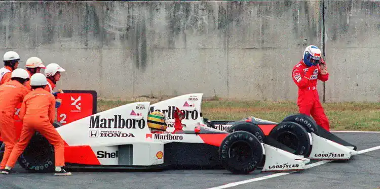
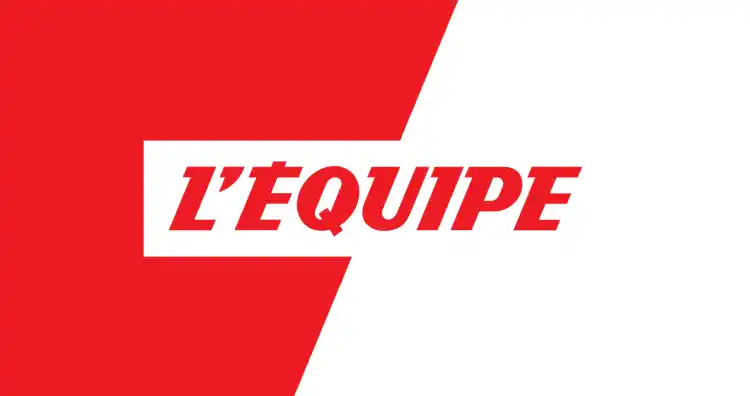

Le titre du livre est 1000 Grands Prix - 70 ans de Formule 1 il est paru le 21 Novembre 2019 au édition Solar, le livre compte 176 pages. Il est écrit par Stéphane Barbé avec des images des journalistes L'Équipe
De quoi parle ce livre ?
Le livre est sorti pour l’anniversaire des 1000 Grand Prix que la Formule 1 a dépassé en 2019. Le livre suit la première saison qui a commencé en 1950, et nous présente les premiers grands pilotes comme Giuseppe Farina qui a terminé la première saison de Formule 1 en devenant Champion du monde ou Alberto Ascari qui est devenue le premier pilote multiple champion du monde en gagnants les saisons de 1952 et 1953, sans compter le légendaire Juan Manuel Fangio qui sera titré quatre fois ( 1951, 1954, 1955, 1956, 1957) avec 4 écuries différentes : Alfa Romeo, Maserati, Mercedes et Ferrari. Le livre va aussi parler de la rivalité que l'on retrouve dans le film Rush entre Niki Lauda et James Hunt qui commencera en 1975 avec le premier titre de Lauda qui en gagnera deux autre en 1977 et en 1984 avec Hunt qui arrive à gagner son seul titre en 1976 avec une saison incroyable entre ces deux pilotes. Une autre rivalité traiter dans ce livre est celle entre le Brésilien Ayrton Senna et le Français Alain Prost qui durera de 1983 à 1994, cette rivalité c’est terminé a cause d’un tragique accident de Ayrton Senna sur le circuit d’Imola en 1994. Plus récemment le livre raconte l’arrivée plus récente du grand constructeur Allemand Mercedes avec la domination de ce constructeur et de ces pilotes qui dure depuis 2013 avec le changement de réglementation technique.
Ayrton Senna et Alain Prost au Grand Prix du Japon en 1989
Qui est Stéphane Barbé ?
Stéphane Barré est Auteur de livres et rédacteur spécialisé dans l’automobile, il était le rédacteur en chef de la section automobile du journal L’Equipe de 1982 à 2022. Durant ces 40 années d’expérience il a été grand reporter en Formule 1, au 24h du Mans, les 500 miles d’Indianapolis et les compétitions électriques comme la Formula E. Il est diplômé du centre de formation des journalistes (CPJ-Paris) en 1981
